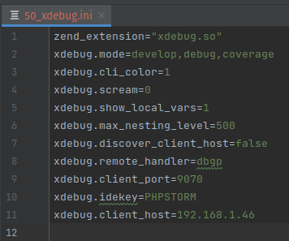

PHPUNIT DEBUGGING IN DOCKER
Note
This documentation works with PHP Storm version 2022.3.3.
Note
Make sure your docker is sudoless , if not run the command “sudo usermod -aG docker $USER” and then restart the system.
PREREQUISITES
Stop existing containers if any.
Remove unused data from your Docker system, including stopped containers, dangling images, and unused networks.
docker system prune --all
Volumes are not pruned by default, and you must specify the –volumes flag for docker system prune to prune volumes.
docker volume prune
SETTING UP THE PROJECT
Clone and open the project (Apple or Apple Style) in PHP storm.
In ‘deploy/xdebug’ directory , open 50_xdebug.ini file
In xdebug.client_host key , provide your IP address.
Set up the project
make setup
make upbg
Note
If errors are encountered while bringing up the project run the following commands :
sudo service nginx stop
sudo service redis-server stop
make db-fresh
Install Debugger
make install-xdebug
make setup-xdebug
make restart-fpm
SETTING UP CLI INTERPRETER
Go to settings > Php
Click the three dots on the right of CLI interpreter and select ‘From Docker, Vagrant, VM, WSL, Remote’
Configure remote PHP interpreter and select Docker Compose and click on ‘New’
After selecting Docker Compose connect to Docker daemon
Click on add
Select activate_api from folder
Choose connect to existing container
Add configuration directives and values
Go to settings > Php > Test Frameworks
Click on ‘+’ icon and select ‘PHPUnit by Remote interpreter’
Select ‘activate_api’ interpreter from the drop down
After selecting ‘activate_api’ , select path to script from vendor>bin>paratest_for_phpstorm
Go to settings > php > Debug and change the debug port to 9070
Go to Current File > Edit configurations
Add new configuration by selecting ‘+’ icon and select ‘PHPUnit’
Name it as ‘NewLoginTest’
Select test scope as ‘Class’
Give path to class and file
Use alternative configuration file
Open tests > Feature > Http > Controllers > AccountController > NewLoginTest.php
Run test
Run debugger